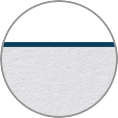
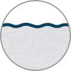
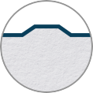
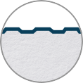
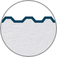

Виды профилирования сэндвич-панелей
Производим сэндвич-панели из минеральной ваты из минеральной для любых задач

ГладкийСамый популярный вид профиля, его особенность заключается в том, что его популярность по виду

ВолнаСамый популярный вид профиля, его особенность заключается

ТрапециевиднаяСамый популярный вид профиля, его особенность заключается в том, что его популярность по виду

НакаткаСамый популярный вид профиля, его особенность заключается

КровельнаяСамый популярный вид профиля, его особенность заключается в том, что его популярность по виду